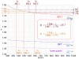

abbe_number

Definition: In optics and lens design, the Abbe number, also known as the V-number or constringence of a transparent material, is an approximate measure of the material's dispersion (change of refractive index versus wavelength), with high values of V indicating low dispersion. It is named after Ernst Abbe (1840–1905), the German physicist who defined it. The term V-number should not be confused with the normalized frequency in fibers.
Source: Wikipedia
Wikipedia Page
Wikidata Page